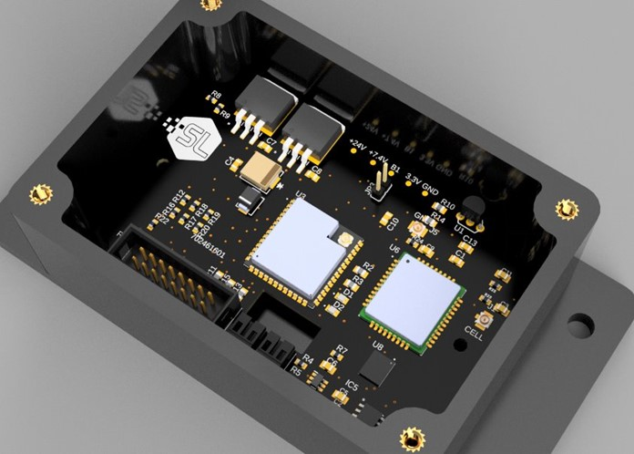

Welcome to the Harsh Environment Sensor Board Phase 2 project website! Explore Design 1 and Design 2 details below.


Link to Software Logistics website
The purpose of this project was to design a multi-purpose sensor board to be used in harsh environments whilst transmitting useful data over a cellular network. Our product allows for reliable remote monitoring solutions in larger extreme systems such as heavy machinery and industrial systems.
The system diagram shows each of the PCB’s interconnections. The ESP32 is connected to a SIMCOM Networking board as well as the battery and voltage input. It is also connected to the temperature sensor for sensing data.
Problem
Video Link
In our design, the ESP-32 is doing most of the networking and communication. It is controlling the temperature sensor while also sending data to the cellular network for analysis. We wanted these key systems to be powered by battery in case of loss of a direct voltage source